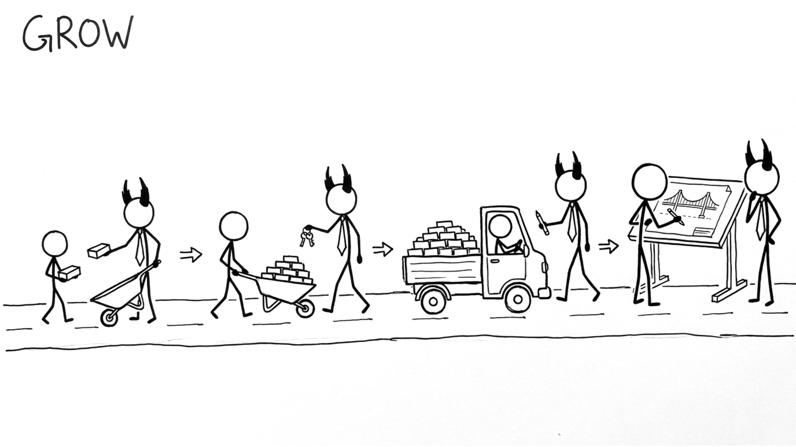

<section id="cap-grow" data-transition="fade" style="display:flex; align-items:center; justify-content:center; padding:0; background:#fcfcfa">

<p style="position:absolute;left:0;bottom:10px;width:1920px;margin:0;text-align:center;font-family:'Patrick Hand', 'Trebuchet MS', sans-serif;font-size:22px;color:#8a8f98">Copyright Dobromir Montauk 2026</p>
<aside><b>Grow.</b> This could be a whole set of talks. Three parts:<br>1. Opportunities: give people work one size bigger than their last job. The mid-level engineer leads the next design review; the senior engineer owns the launch.<br>2. Mentorship: show how to do the job. Do it together first: you run the incident review while they watch, then they run it while you watch.<br>3. Coaching: support them while they do the job on their own. Weekly 1:1s, feedback within days, and questions instead of answers.</aside>
</section>
